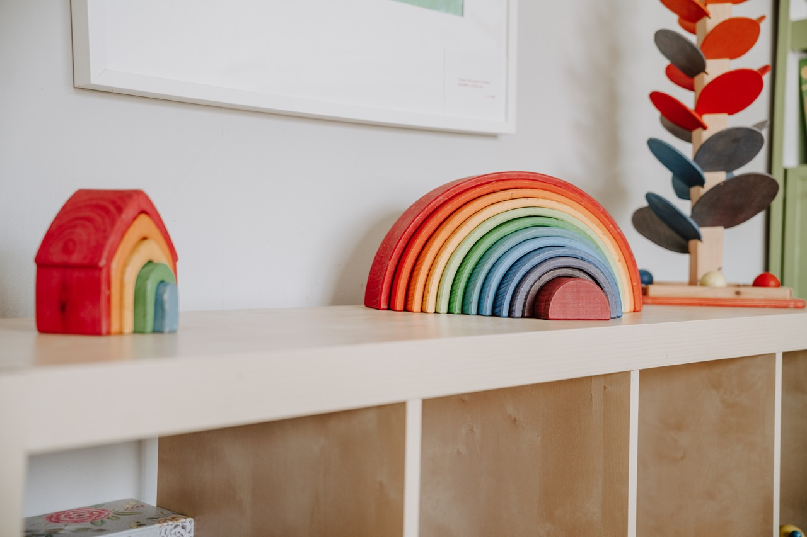
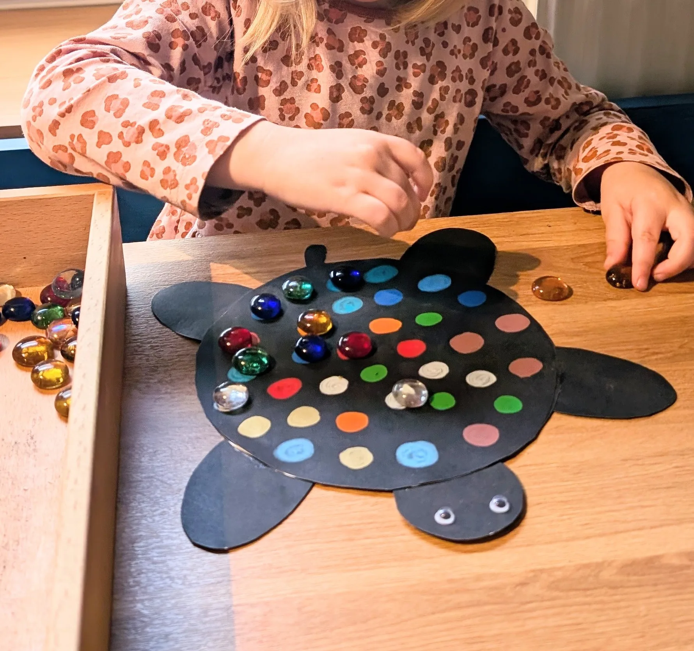
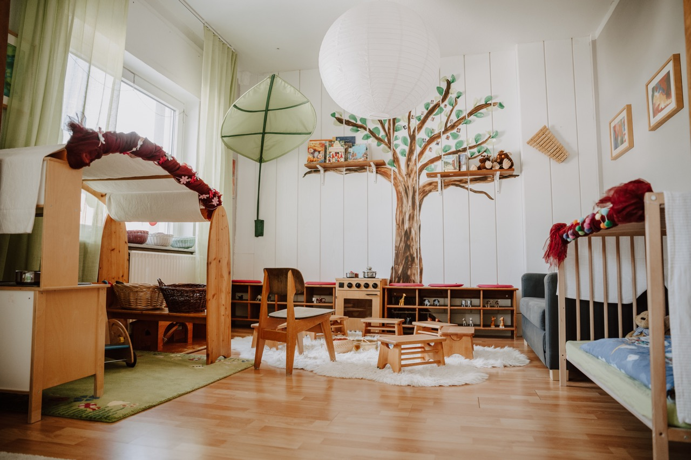
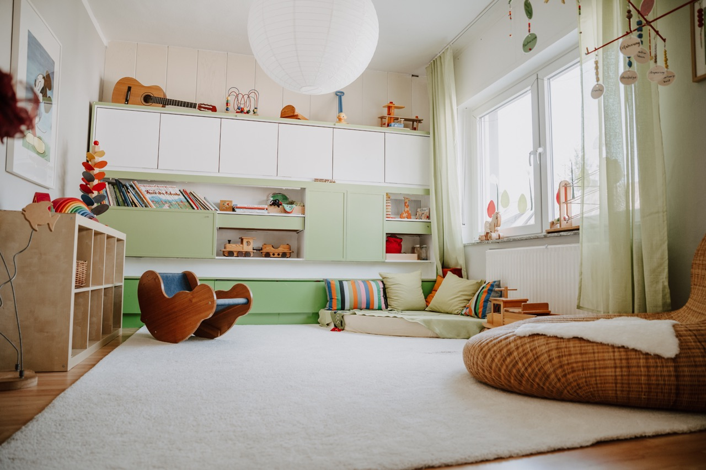
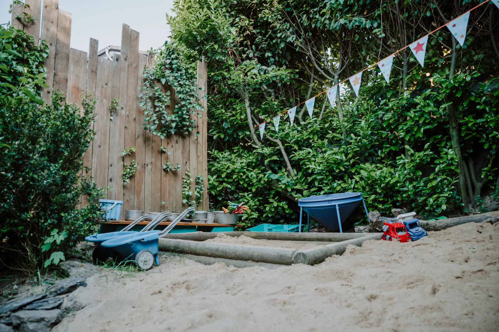
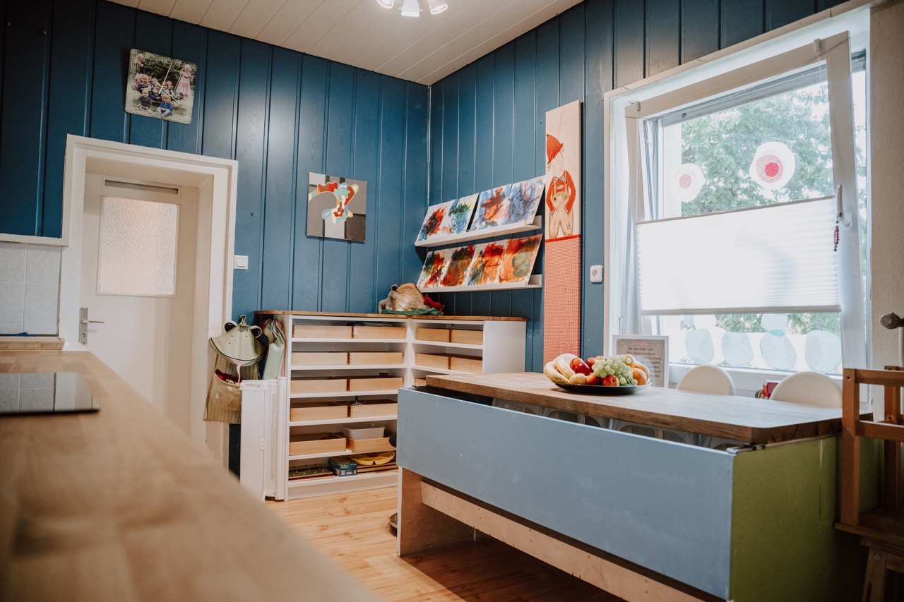
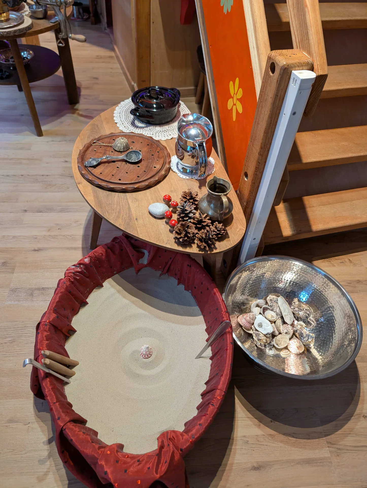

SandStube
Erlebnisraum
- Für wen
- Kinder gemeinsam mit ihren Eltern, erste Schritte bis ca. 6 Jahre
- Wann
- Einzelne Zeitfenster von 3 Stunden, frei wählbar
- Kosten
- 25 € / 50 € / 90 € pro Zeitfenster
- Anmeldung
- Direkt online über TidyCal – sofort buchbar
In der SandStube rieselt feiner Sand durch kleine Hände – ein Erlebnisraum, den ihr stundenweise online bucht. Im Wichtelstübchen wachsen neun kleine Wichtel jeden Tag ein Stückchen – liebevolle Kindertagespflege für 0–3 Jahre. Zwei Angebote, die getrennt laufen und sich nur die Adresse teilen.

Jedes Angebot hat seine eigene Farbe, seinen eigenen Rhythmus und seinen eigenen Weg der Anmeldung.

Spüren, staunen, spielen: große Sandschüsseln, Töpfe, Kellen und Zeit ohne Eile. Für Kinder von den ersten Schritten bis ca. 6 Jahre – gemeinsam mit euch. Ideal für Kindergeburtstage.

Ein vertrauter Tagesrhythmus, ein festes Team und viel Geborgenheit für neun kleine Wichtel zwischen 0 und 3 Jahren. Von der Stadt Siegen anerkannt nach §43 SGB VIII.
SandStube und Wichtelstübchen sind organisatorisch vollständig getrennt – eigene Zeiten, eigene Preise, eigener Anmeldeweg.
Erlebnisraum
Kindertagespflege
Kleine Momentaufnahmen aus beiden Welten.




Maria führt das Wichtelstübchen und die SandStube – als zwei getrennte Angebote unter einem Dach in Siegen. Gemeinsam mit Alexander und Zerina begleitet sie die kleinen Wichtel durch den Tag; die SandStube öffnet sie für Familien, die einen ruhigen Nachmittag oder einen besonderen Geburtstag suchen.
„Gib deinem Kind Zeit zum Spielen – denn das Spiel ist die höchste Form des Forschens.“